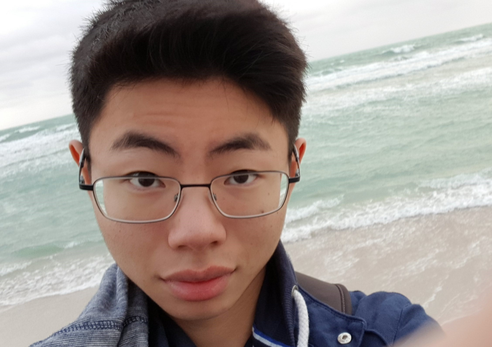

Konst klubben uppstod från idén att göra konst och kultur mer tillgänglig för eleverna på NTI. För oss är detta en plats där man får möta och träffa på människor med liknande intressen. Klubbens grundare är Kevin Shen.
Konst klubben befinner sig i NTI Johannebergs sal 325 och är öppen från kl 16:00 till 19:00 på vardagar.
